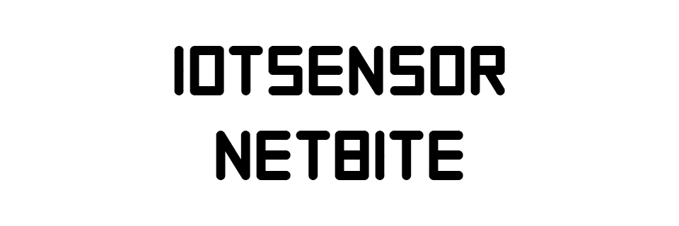
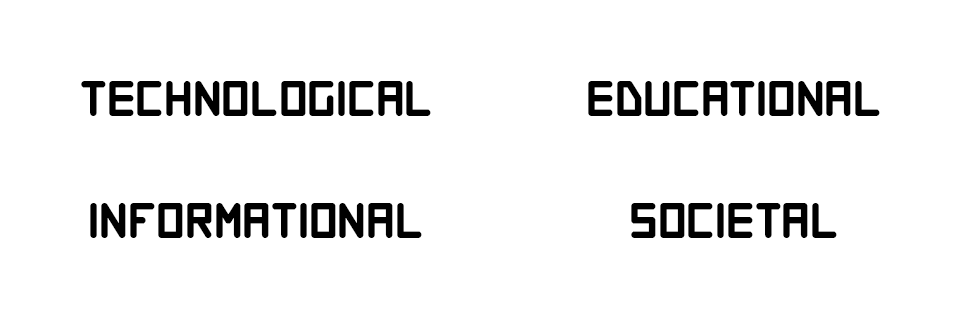
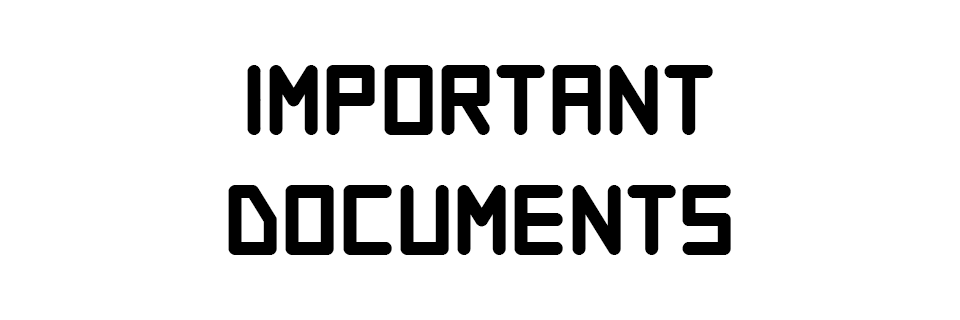

Продукты

ПО IoTSensor. Программное обеспечение для сбора и исследования информации о выдаваемых SSL-сертификатах в сети Интернет (ПО IoTSensor) представляет собой программу, функционирующую в фоновом режиме в виде сервиса системы и непрерывно собирающую данные из публично доступных реестров Certificate Transparency Logs. ПО IoTSensor предназначено для решения следующих задач: загрузка сертификатов безопасности; сохранение сертификатов в базу данных; просмотр и поиск сертификатов в базе данных.
ПО Netbite. Netbite — веб-сервис для сбора и исследования информации об открытых портах, протоколах и сервисах. Веб-сервис доступен адресу https://netbite.io. Специальных действия по установке ПО на стороне пользователя не требуются. Сервис Netbite предназначен для решения следующих задач: сбор информации об открытых портах, протоколах и сервисах; просмотр и поиск собранной информации посредством использования языка запросов.
Активность

Основные направления деятельности: создание программных и аппаратных средств защиты информации, технических средств контроля эффективности аппаратуры защиты информации; разработка систем и средств информационного противодействия терроризму и экстремизму в образовательной среде и сети Интернет; создание автоматических комплексов потокового анализа текстовых, гипертекстовых и мультимедиа данных; разработка и совершенствование систем специальной связи и мобильных устройств связи специального назначения; разработка и внедрение систем обеспечения информационной безопасности, в том числе объектов критической инфраструктуры РФ; создание методов криптографической и стеганографической защиты информации. В рамках государственного оборонного заказа Институт выполняет работы по заявкам управлений и служб силовых министерств и ведомств, органов государственной власти.
Центр реализует сотрудничество в сфере трансфера технологий, создания и продвижения коммерчески перспективной высокотехнологичной продукции, укрепление бренда Института, через развитие инновационной, коммерческой, маркетинговой, экспертной, выставочной и других видов деятельности Центра.
В своей деятельности НЦПТИ взаимодействует с Национальным антитеррористическим комитетом, ФСБ России, МВД России, Прокуратурой РФ, Следственным комитетом РФ, ФСТЭК России, Роскомнадзором, Росфинмониторингом. Сотрудники НЦПТИ являются действующими федеральными экспертами Росмолодежи, Аналитической ассоциации Организации договора о коллективной безопасности (ОДКБ).
ФГАНУ НИИ «Спецвузавтоматика» активно занимается социальной и благотворительной деятельностью с момента своего создания.
Документы

Результаты СОУТ 2022
Результаты СОУТ 2023
Регламент замещения должностей по конкурсу
Перечень мероприятий по улучшению условий труда
Сводная ведомость спецоценки условий труда
Контакты